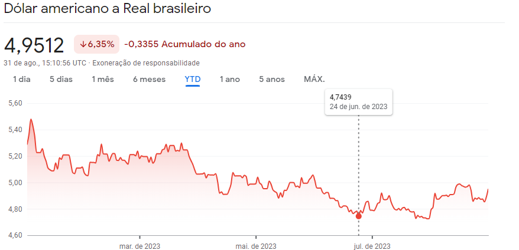

Neste ano de 2023, o dólar teve várias quedas de valor repentinas, algo que surpreendeu os economistas, que não esperavam uma queda dessa magnitude.
Porém, no mês de agosto, o dólar deu uma guinada. Mas o que está acontecendo afinal? O Brasil está realmente se tornando menos dependente? Os Estados Unidos estão enfrentando uma crise? Veja o tópico a seguir para obter mais informações sobre o assunto.

O dólar está diminuindo devido às expectativas das taxas de juros e ao agressivo aumento das taxas pelo Fed.

Para ser mais preciso e claro, a economia dos Estados Unidos registrou um crescimento de apenas 2,9% no 4º trimestre de 2022, um resultado bastante baixo para os padrões americanos, e continuou a flutuar até chegar ao modesto 1% dos dias atuais.
Outro fator que contribuiu para a queda do dólar é que o Brasil possui a taxa real de juros mais alta do mundo.
Os economistas ainda estão debatendo bastante sobre este delicado assunto, mas há uma estimativa de que o dólar diminua para $1,00 -> R$4,64.


Porém, uma certeza que muitos têm é que ainda é possível que o dólar caia para um valor ainda menor, como $1 -> R$4,40, até o final deste ano.
Talvez sim, talvez não, é como uma balança, mas agora, está mais nas mãos da China decidir, pois se a economia deles crescer, existe uma maior chance de o dólar ter uma queda.
Com o real valorizado, os preços de importados caem, o que inclui máquinas e equipamentos, além de insumos intermediários para a produção de diversos produtos.
Veja mais noticias novas feito pelo nosso jornal!